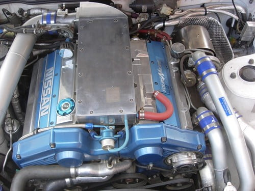

-
Stand alone, screw all that oem crap.300zxt wrote: As I said before, ever seen a Japanese wiring schematic? Not cool! lol85 Z31 6.0 LSX turbo 766whp/792wtq
04 GTO, LS6, big cam, porting, N20… underway for summertime daily driver. -
That pretty much screws his whole cash saving scheme though lol Then tuning and dyno time, oh dont forget the 100k service which he "neglected" to mention which is due on it *cough* another grand or so there in parts lol Custom driveshaft aswell is another thing, oh the list just grows and grows huh Matt? hehe
I'm just teasing him, we've spoken lots about this and I've clearly told him it's a cool swap but it's not exactly cost efficient or "easy" compared to modifying the stock engine but I'm looking foward to seeing the end result none the less. -
Oh, see. This thread kinda got high jacked. I was talking about just the comparisons between the two engines, not wether it would be a good idea for him ops:
85 Z31 6.0 LSX turbo 766whp/792wtq
ops:
85 Z31 6.0 LSX turbo 766whp/792wtq
04 GTO, LS6, big cam, porting, N20… underway for summertime daily driver. -
Oh haha, sorry about that! I think it's fairly obvious that DOHC is technologically superior, Nissan wouldn't go backwards on something like that.
It has been done before, another guy in Australia did it infact and he used twin turbos. Why he didn't just go with a VG30DETT from a Z32 I'm not really sure but it came out looking pretty nice.

http://www.flickr.com/photos/63979750@N00/
It cost him ALOT of money though, more than what you've spent on your car SATAN and he aint at the power levels you are that's for sure. I think that's one of the main points to consider, regardless of how much better DOHC is. Another thing too look how damn tight that thing is in there! No room for nothing else really… -
I wouldn't use stock redline much in the way of an arguement. Yes some of it is lighter and smaller, but the larger portion of the weight, such as crank/pistons/rods/cams are going to be nearly identical in weight. Also, there is more than enough ways to modify either engine to make them rev way out of their powerbands, such as lightening the crank, lighter moving parts, balancing, valve springs etc.. and as far as upper and lower powerbands go, you can control that on either engine (or any for that matter) by adjusting timing/cams.SATAN wrote: just look at the stock redline of the two motors. Typically dual over head cam engines can rev higher due to the LIGHTER valves in the valve train. Yes you have twice as much of it, but all of the components are smaller and lighter weight.
Irronically,here is a comparison of the two engines. This was the very first link that came up when I googled sohc vs. dohc :shock:
Either way, here it is.
http://paultan.org/archives/2005/06/22/ … lvetrains/
4 valves is always going to have an advantage, but with built internals on both engines, i doubt you see more than a negligible difference road racing.1985 NA2T(now RB) * 1988 SS x2 * 1984 AE x3 * 2006 350Z

-
[quote]OK85ZX wrote:Yes but keep in mind you can do that to both engines. You said it yourself. "but the larger portion of the weight, such as crank/pistons/rods/cams are going to be nearly identical in weight." So therefore the bottom end is irrelevant. Not to mention that the stock bottom end will handle 7500rpm, maybe more, thus making the bottom end even more irrelevant.Originally posted by SATAN
Wether it be stock or modified equally on both engines, the 4 valve will be able to rev higher and make more power doing so, giving you a wider usable power band, which will DEFFINATLY help in ANY motor sport. Four valve is just better, End of story.
Also, ANY difference in any racing is ALWAYS negligable :wink:85 Z31 6.0 LSX turbo 766whp/792wtq
04 GTO, LS6, big cam, porting, N20… underway for summertime daily driver. -
Oi some of us have day jobs dammit, give me shit about this when I'm around to stick up for myself :P300zxt wrote: That pretty much screws his whole cash saving scheme though lol Then tuning and dyno time, oh dont forget the 100k service which he "neglected" to mention which is due on it *cough* another grand or so there in parts lol Custom driveshaft aswell is another thing, oh the list just grows and grows huh Matt? hehe
I'm just teasing him, we've spoken lots about this and I've clearly told him it's a cool swap but it's not exactly cost efficient or "easy" compared to modifying the stock engine but I'm looking foward to seeing the end result none the less. -
What I meant, by showing that the bottom end, was that the vast majority of the rotating mass in the engine is going to be nearly identical, which the intention of me saying that was to lead to the conclusion that the rest of the rotating mass is going to be a very small portion of the weight. The differences are going to be; cam gears, cams, valves, valvesprings (more specifically, more valvesprings causing more power needed to counteract the extra pressure caused by twice as many valvesprings). All of these things that are different between the two engines, the DOHC is going to have twice as many as the SOHC engine. stock vs stock weight, and fully modded vs fully modded weight, I don't see the engine having twice as many of the same components having a lighter rotating mass. The numbers may be alot closer stock vs stock, but once everything is upgraded/lighter, I see the DOHC being heavier (note: by as I said earlier, a very small portion of the rotating mass).SATAN wrote:
Yes but keep in mind you can do that to both engines. You said it yourself. "but the larger portion of the weight, such as crank/pistons/rods/cams are going to be nearly identical in weight." So therefore the bottom end is irrelevant. Not to mention that the stock bottom end will handle 7500rpm, maybe more, thus making the bottom end even more irrelevant.
Wether it be stock or modified equally on both engines, the 4 valve will be able to rev higher and make more power doing so, giving you a wider usable power band, which will DEFFINATLY help in ANY motor sport. Four valve is just better, End of story.
Also, ANY difference in any racing is ALWAYS negligable :wink:
I still don't see the dohc being able to "rev higher" than the sohc. Powerband is a different story, of course the dohc is going to have a naturally higher powerband, and not as good of a bottom end.1985 NA2T(now RB) * 1988 SS x2 * 1984 AE x3 * 2006 350Z
-
The DOHC engines max torque figure is 253 lb-ft at 3200rpm. -
4 valves rev higher. I'm not going to explain to you why. I posted a link that goes into it briefly and the was the very first one that popped up, not to mention the MANY others that pop up while searching that will explain why.OK85ZX wrote:
I still don't see the dohc being able to "rev higher" than the sohc. Powerband is a different story, of course the dohc is going to have a naturally higher powerband, and not as good of a bottom end.
Now the "not as good of a bottom end" however, is neglagible due to the fact that you dont use bottom end power in any racing really, not that I can think of anywaysops: . Its allways above 4000rpms which is where the 4 valve shines. Also, a 4 valve is not really that bad at low end either.
OH, here I've got a good link for you, I dont know if you saw the discussion a while ago about DOHC vs SOHC, But incase you didnt catch the thread, here it is. http://z31performance.com/forum/vie … light=dohc85 Z31 6.0 LSX turbo 766whp/792wtq
04 GTO, LS6, big cam, porting, N20… underway for summertime daily driver.


Copyright © 2006–. All rights reserved. Privacy Policy